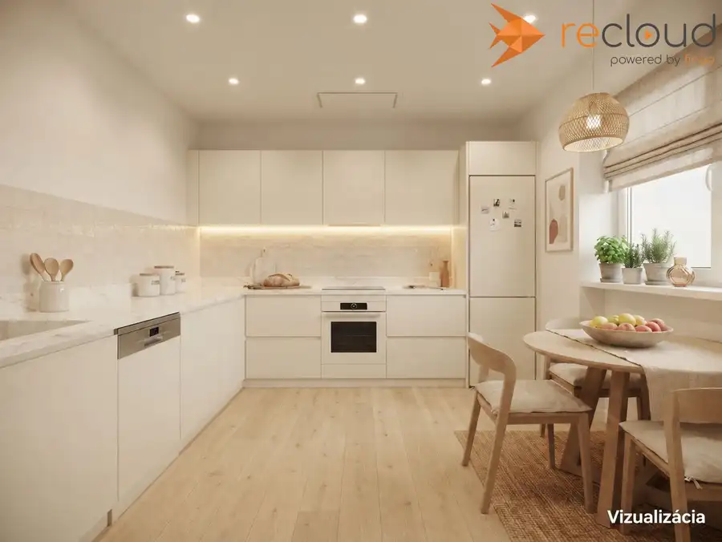
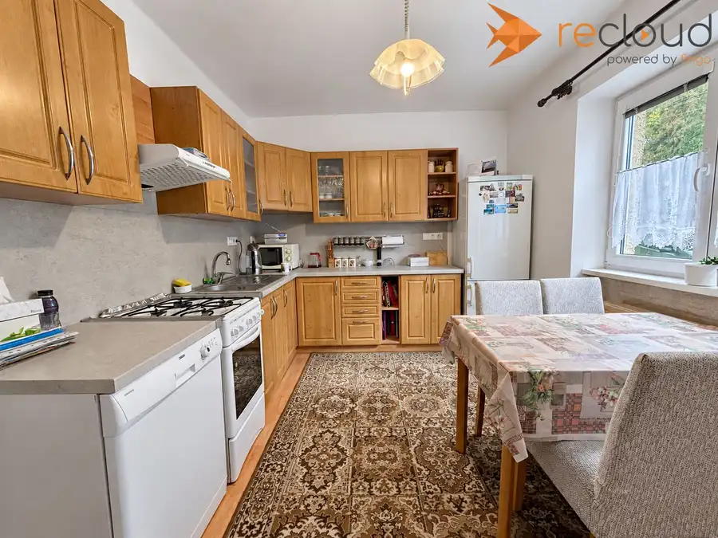
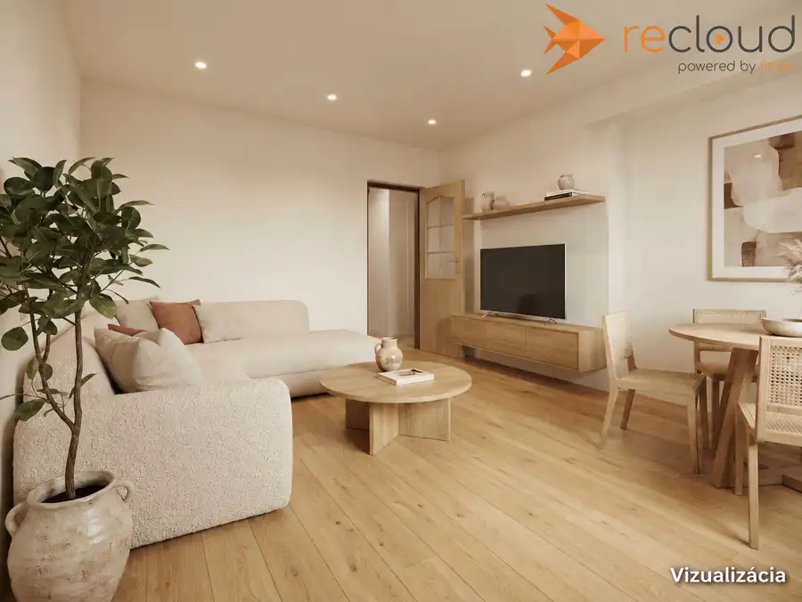
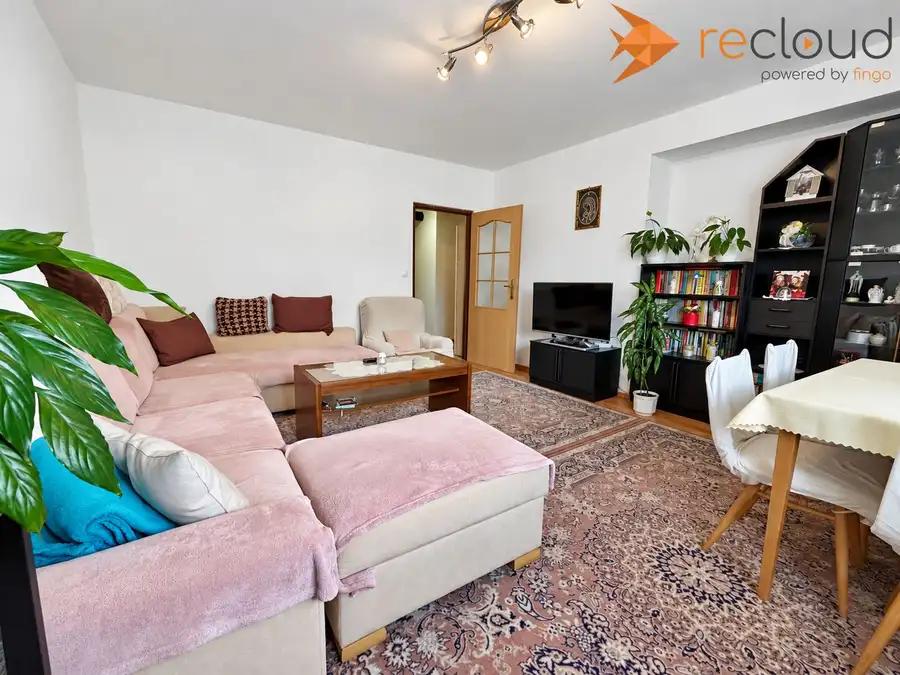
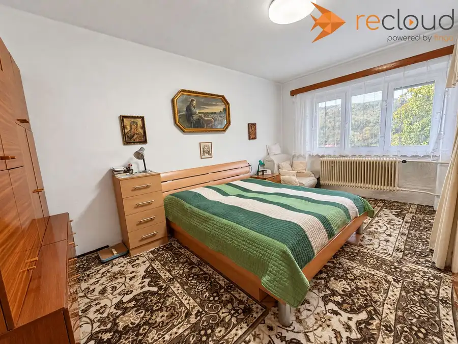
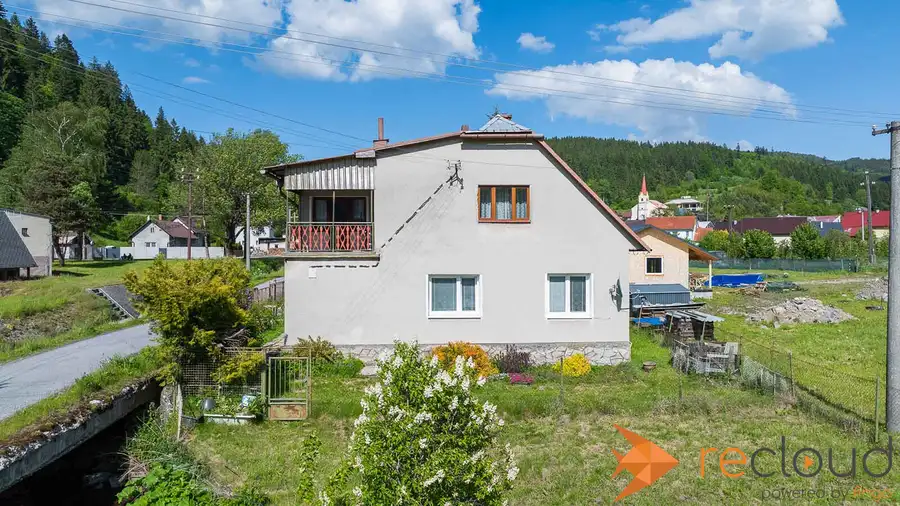
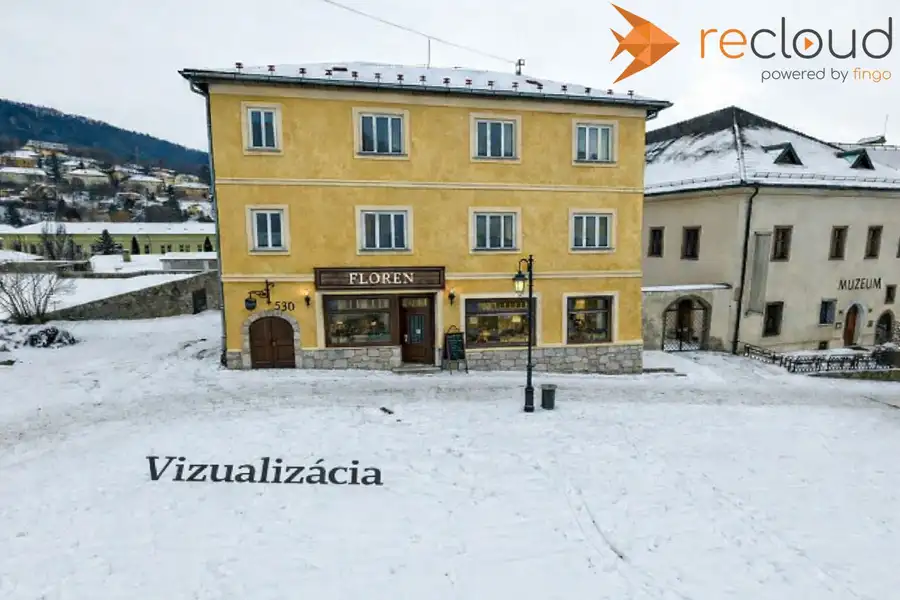
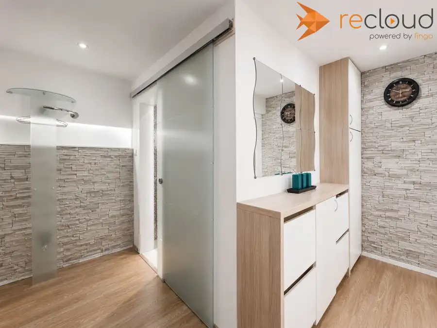

Predaj: veľký 3-izbový byt s vyhľadom na Kremnicu
Kremnica





- Dispozícia3-izbový
- Plocha89 m²
- Poschodie1. z 3
- StavČiastočná rekonštrukcia
- VlastníctvoOsobné
O nehnuteľnosti
Klára Holicová - Reality, s.r.o, Vám ponúka na predaj 3-izbový byt v Kremnici s balkónom a výhľadom na mesto Kremnica.Celková výmera je 89 m² vrátane dvoch pivníc + balkón. Byt pozostáva z obývačky, dvoch izieb, priestrannej kuchyne so špajzou, chodby a kúpeľni s WC.V obytných izbách sú parkety. V obývačke je na nich položená laminátová podlaha, v spálni a druhej izbe guma. Kúpeľňa bola zrekonštruovaná približne pred 7 až 8 rokmi a je vybavená sprchovacím kútom, WC a bidetom. V rovnakom období boli v obývačke, kuchyni, chodbe a kúpeľni vymenené elektrické rozvody za medené. Stierky boli urobené v obývačke, v chodbe a kúpelni.Vykurovanie je ústredné plynové. Plynový kotol umiestnený v kúpeľni má približne jeden rok. K dispozícii je aj pec na pevné palivo v pivnici a menšia piecka na chodbe.Mesačná platba do spoločenstva je 34 € a záloha za plyn 86 €. Byt ponúka veľkorysý priestor, dve pivnice a balkón, z ktorého si môžete vychutnať výhľad na krásnu Kremnicu.IG: https://instagram.com/klaraholicova/?hl=es&img_index=1Ak Vás ponuka zaujala, neváhajte ma kontaktovať na tel. číslo: 0915 972 958 alebo e-mailom: holicova@klara-holicova.sk
Parametre
- Cena vrátane energií
- Nie
- Druh
- 3 izbový byt
- Dátum zverejnenia
- 24. 09. 2026
- Energetický certifikát budovy
- nie je
- Podlažie
- 1
- Počet nadzemných podlaží
- 3
- Stav nehnuteľnosti
- Čiastočná rekonštrukcia
- Typ
- Predaj
- Typ konštrukcie
- Tehlová
- Umiestnenie
- Ďalšie nadzemné podlažie
- Vlastníctvo
- Osobné
- Úžitková plocha
- 89 m²
Kde to je


Mohlo by Vás zaujímať

DomNové 95 000 €Rodinný dom v Hornom Turčeku s rovinatým pozemkom Turček 200 m²
Komerčné priestoryNové Cena na vyžádáníPREDAJ výnimočnej historickej budovy – Floren Kremnica 1700 m²
BytRezervované 119 000 €2-izbový byt po kompletnej rekonštrukcii na Kollárovej ulici Žiar nad Hronom 2-izbový65 m²1. podlažie